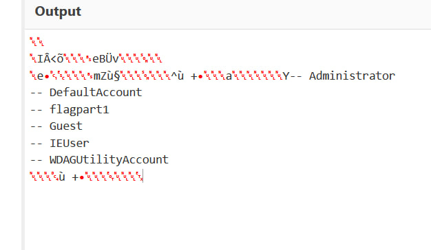

Dưới đây là chall Forensic của SVATTT 2024. Tác giả: bquanman
Chall cho ta 2 file:
- file process dump
- file pcapng lưu lượng mạng
1. Kiểm tra file process dump
Load vào windbg
Dùng command lm để check các module:
Nhận thấy chỉ có module OneDrive là không có symbols.
Kiểm tra module này, bằng lệnh lmDvmOneDrive
Thấy file thực thi được tải về từ Internet tại Downloads.
Địa chỉ trong memory từ 0x7ff620ae0000 đến 0x7ff620afe000
thực hiện dump đoạn memory này ra file bằng lệnh
.writemem C:\TEMP\OneDrive.dmp 00007ff6`20ae0000 00007ff6`20afe000
Tuy nhiên, báo lỗi không access được dữ liệu tại 0x7ff620afe000
Mình mới thực hiện phân tích lại !analyze -v (không cần thiết)
Sau đó chỉ dump đến 0x7ff620afdf00, bỏ 0x100 bytes cuối đi (đoán)
.writemem C:\TEMP\OneDrive.dmp 00007ff6`20ae0000 00007ff6`20afdf00
Thì dump thành công, Windows Defender check và báo mã độc Havoc.C
Tìm kiếm một hồi về các bài phân tích Havoc C2, mình tìm được 2 link này:
https://github.com/Immersive-Labs-Sec/HavocC2-Forensics
https://www.immersivelabs.com/blog/havoc-c2-framework-a-defensive-operators-guide/
và link tàu này:
https://www.51cto.com/article/767998.html
(Có sẵn PDF cùng folder)
Phát hiện, cấu trúc KEY_MAKER của Havoc C2 như sau:
signatures = {
'havoc_key_marker': """rule havoc_aes_marker
{
strings:
$AES_KEY_MARKER = { 00 00 ?? ?? de ad be ef ?? ?? ?? ?? 00 00 00 63 00 00 00 00 }
condition:
$AES_KEY_MARKER
}"""
}
Đoạn code detect AES Key và IV, agent ID như sau:
rules = yara.compile(sources = signatures)
....
for offset, rule_name, _name, _value in layer.scan(context = self.context,
scanner = yarascan.YaraScanner(rules = rules),
sections = vadyarascan.VadYaraScan.get_vad_maps(proc)):
if rule_name == 'havoc_aes_marker':
# Read 1024 bytes from the layer at the offset and try to parse out some values.
raw_data = layer.read(offset, 1024, False)
vollog.debug(f'Found AES Key Marker at {hex(offset)} in {process_name}\n')
vollog.debug(f'Raw Data: {raw_data}\n')
agent_id = raw_data[8:12].hex()
vollog.debug(f'Agent ID: {agent_id}\n')
aes_key = raw_data[20:52].hex()
vollog.debug(f'AES Key: {aes_key}\n')
aes_iv = raw_data[52:68].hex()
vollog.debug(f'AES IV: {aes_iv}\n')
Có thể thấy AES Key ở offset [20:52], AES IV ở offset [52:68] và Agent ID ở [8:12] tại vị trí tìm ra signature.
Do đó, mình nhanh chóng thu được key, iv và agent id từ file dump process.

Như vậy:
Thu được:
agent id:
2a c0 84 1e
aes key: [20:52]
D4 DC 20 98 7E EC 20 02 E0 46 D0 D0 3C BC C2 9A 88 96 44 34 D0 42 90 12 66 BA 98 1C E0 48 98 1E
aes iv: [52:68]
DC DA C0 90 F6 5E A6 76 FC 72 8E 08 54 66 40 30
Như vậy, mình đã nghĩ đến đây là xong. Mình chỉ mất khoảng 1 tiếng để tìm được đến đây.
Với bài phân tích vừa rồi, mình đoán sẽ dùng AES decrypt giải mã pcapng để lấy flag.
Tuy nhiên, mọi chuyện không như là mơ.
2. Xử lý pcapng
Kiểm tra pcapng thì chỉ thấy có 2 IP 192.168.240.148 và 192.168.240.147.
Kiểm tra thì chỉ có 2 tcpstream là 0 và 1. là các request đến cổng 443 của IP:148. (attacker)
Như vậy, mình cần tìm các requests gửi dữ liệu lên máy chủ, decrypt là lấy được file.
Khó khăn từ đây (do mình dốt crypto :<)
Kiểm tra sơ sơ thì thấy có vài request POST send data rất lớn.
Đến đây mình dùng Cyberchef để cố decrypt phần body request nhưng thử với tất cả các thuật toán đều không được, về sau phát hiện ra, Havoc dùng AES CTR mode.
Tuy nhiên, mình vẫn không decrypt được, mình có thử viết code python decrypt cũng không được. Mãi sau, mình mới đọc lại blog 51cto ở trên. Phát hiện phần body có cấu trúc. 20bytes đầu là các giá trị, sau đó là data bị mã hoá.
Data POST lên có cấu trúc như sau:
Dó, lúc này mình mới nhận ra và bắt đầu đi lọc các POST request lớn, có Agent ID và check dữ liệu decrypt.
Mình thu được output command, khẳng định AES Key IV là đúng
Sau đó mình tìm thấy một request có data decrypt có thứ rất quen thuộc, .rels và .xml. Với bản năng của 1 mal analysis, đây là docx mình cần!!!
Mình thu được file docx sau khi chạy word recovery.

flag 2:
Flag2: Th3_9r0unD_0b3y5_m3_0e2845b20c93546}
Mình bắt đầu hơi hụt hẫng, ủa flag1 đâu, hay trong request vẫn còn. Mình tiếp tục đi decrypt hết các POST data, thậm chí cả data trả về của Havoc C2 server ở IP:148.
Thu được, đoạn text flagpart1 ????

Hay một số data có cấu trúc rất lạ, giống kiểu output của ascii graphic, mà mình không đoán ra ý nghĩa
Data ec0 ec1 do server gửi đến

Nohope flag part 1 :<
Sau đó team có tìm thêm 1 số string trong file OneDrive.exe
Nhưng có vẻ không khả quan lắm.
Cuối cùng mình định tạo lại lab Havoc nhưng đã quá muộn.
END GAME lần xxx :((((
Bonus, phần flagpart1, sau khi có WU của tác giả
Đúng như dự đoán, phần dữ liệu được server gửi đến máy nạn nhân sẽ là 1 object BOF để thực thi,
Hãy quan sát 1 response
Như trên, khi server response theo cấu trúc chunk, ta sẽ chỉ quan tâm phần Chunk data.
phần Chunk Data này sẽ cấu trúc như sau:
12 bytes đầu (HEADER) | Sau là data
Trong HEADER: 2 bytes đầu là Command ID (ở Little edians) => 0x0A00 = 2560 => BOF objects
Như vậy, decrypt ra sẽ được BOF object.
Tuy nhiên, BOF có signature là bắt đầu bằng bytes
0x64 0x86 cho 64 bit và 0x4C 0x01 (chữ dt và L.) như ảnh (Phần File Header của NTHeader)
với 32bit
Thì trong BOF sẽ như này
Ném vào IDA, phân tích, bấm mặc định, nó sẽ ra được
Như vậy, sau khi decrypt BOF bằng AES-CTR mode, ta sẽ phải xoá đi 16bytes đầu để bắt đầu bằng signature BOF.
Kiểm tra hết các BOF, thấy có BOF để thực thi adduser mà không cần dùng command adduser của windows. Đó là user flagpart1
Vì vậy, ta cần đi tìm data của câu lệnh này ở đâu trong BOF object này.
Phần ảo: Tìm data của BOF object này
Theo cấu trúc của havoc C2 BOF, thì các BOF sẽ được tạo sẵn , phần data sẽ nối ở phía sau BOF.
Nhưng các thức chúng được mã hoá AES lại khác nhau
như sau:
DataChunk = 12bytes HEADER + AES-CTF_Encrypt( 16bytes + BOF object ) + DATA_sau_BOF
Mở rộng nhanh, thực tế phần data sau BOF object có 12 bytes là: TaskID, Command,Executable, packed data length nên:
DATA_sau_BOF = 12 bytes + AES-CTF_Encrypt( Dữ liệu parametter của BOF )
Nghĩa phần data được mã hoá riêng rẽ chứ không mã hoá chung 1 lần với BOF object.
Mà AES-CTR mode sẽ mã hoá 1bytes thành 1 bytes (tương đương)
Nên chỉ cần lấy độ dài dữ liệu của data chunk post - độ dài BOF objects sau giải mã - 16bytes đầu
sẽ ra được độ dài phần data bị mã hoá.
Vậy làm sao biết đc BOF object dài bao nhiêu.
https://github.com/HavocFramework/Modules/blob/main/RemoteOps/bin/adduser.x64.o
Các BOF object là pre-built
Vì vậy, chỉ cần tải file adduser.x64.o cho khớp với BOF trong decrypted data, ta sẽ có được length.
Ở đây, object BOF Adduser kết thúc ở length 3583, tận cùng là byte 0x00
Vì vậy, với phần data encrypted ở Data chunk
Phần này cấu trúc như đã nói, toàn bộ Data Chunk có length 3776.
-
Xoá 12bytes đầu header Được BOF encrypted + data encrypted Tuy nhiên BOF encrypted này có chứa 16bytes đầu là bytes gì đó, trước khi đến được đoạn signature BOF.
-
Xoá 16bytes đầu của BOF để ra đc signature dt
-
Xoá tiếp 3583 bytes BOF object
-
Ta thu được phần data BOF encrypted.
Tuy nhiên, phần data BOF encrypted này cũng có cấu trúc là 12 bytes: TaskID, Command,Executable, packed data length rồi mới đến AES-CTR_Encrypted(Data của BOF)
-
Xoá 12 bytes đầu
-
Thực hiện decrypt AES-CTR, Decode UTF-16 LE
Thu được đoạn bytes (153 bytes):
3b 53 9a a6 93 b6 31 3a cf 25 d6 fa bd b3 ac 98
69 84 ad 7b 25 94 0e ab 5c 3c ec 4b da ea 98 e8
5e b5 c2 5a 8e 37 fa f8 83 eb c4 34 c4 d2 9c e0
67 a6 b5 c0 a3 98 57 3e 29 35 f9 aa 5d 25 1d 44
4d 3e 8d 15 f8 a0 ba 5b 12 a5 55 55 f4 d9 d4 85
b7 f4 1d 6d 8d 7b 4a b9 b0 ca 3e 4d 7b 45 75 4d
ff fd 43 74 34 28 b9 d4 3e 14 1b b3 df 7b b6 7a
3c 86 23 7f 82 12 04 a7 5e 62 14 00 00 00 13 d0
c5 8f 13 00 00 00 64 09 97 a7 9e d9 31 8d f7 fd
4d a6 8d be ad 98 0f 84 ad
Decrypt bằng AES-CTR và Decode UTF-16 LE:
Vậy flag1 :
ASCIS{C@nt_k3Ep_m3_1n_7hE_9r0uNd_